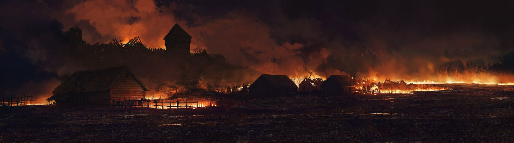

Day 1 - 05/11/2032
I was awakened by the sound of a missile in the distance. I'm at home with my family but we ran out because we saw the fire approaching, we couldn't get any of our belongings out, and I only cared about my younger siblings. Another missile falls. We realized that the whole village is on fire. With my neighbors we tried to escape into the forest but it was also on fire. Luckily we found a canal where we could be away from the fire. We had no choice but to spend the night there.
